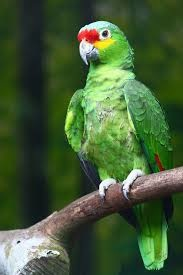

El loro es un ave conocida por sus colores llamativos y su capacidad de imitar sonidos, incluyendo la voz humana. Vive en regiones tropicales.

Algunos loros pueden aprender muchas palabras y repetirlas en el momento adecuado.